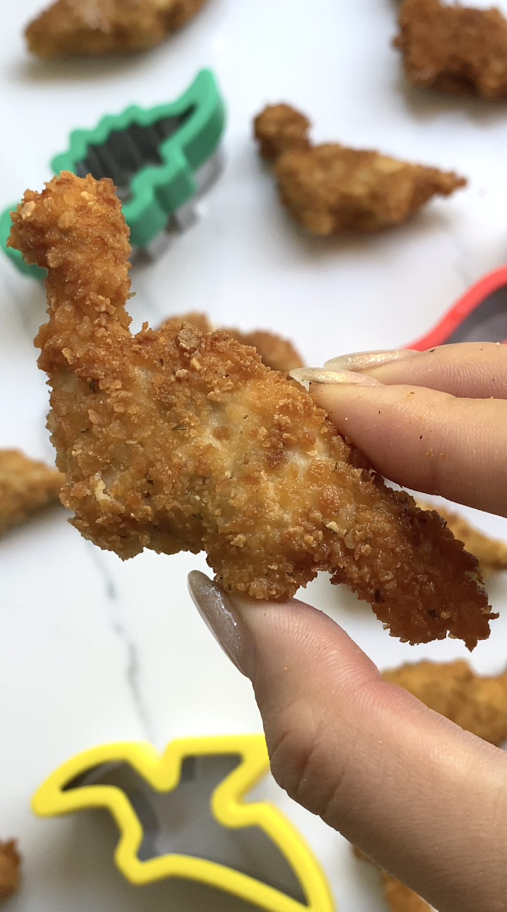

Dino Nuggets

Description:
When I babysat some friend’s kids, their favorite meal were dinosaur chicken nuggets! They inhaled these and loved the fun shape of them. I looked at the ingredients, and even though they were marketed as healthy, there were still some questionable ingredients. I wanted to make my version that were delicious and easy to make but also limited and high quality!
Source
Ingredients:
- 2 Lbs Ground Chicken
- 1 Egg
- 1/2 Tbsp Each: Salt, Pepper, Onion Powder, Garlic Powder, Paprika, Italian Seasoning
Breading
- 2 Eggs
- 1 Cup Flour or Gluten Free Flour
- 1 1/2 Cups Italian Bread Crumbs or GF Bread Crumbs
Instructions
- In a large bowl mix your ground chicken, 1 egg, and seasonings.
- Spread on a parchment lined baking tray until 3/4 to 1 inch thick.
- Freeze for minimum 4 hours.
- Cut out your pieces. If the chicken is thawing out, put it back into the freezer. Make sure they are partially frozen before frying.
- Dip the dinosaur pieces into the flour, then the egg wash, and lastly into the bread crumbs.
- Fry in coconut oil for 3-4 minutes a side until golden brown.
Back Button